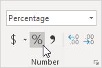
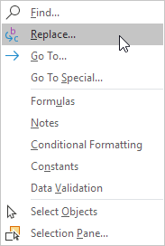
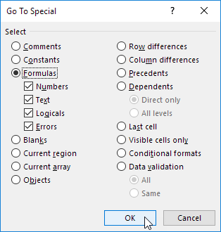
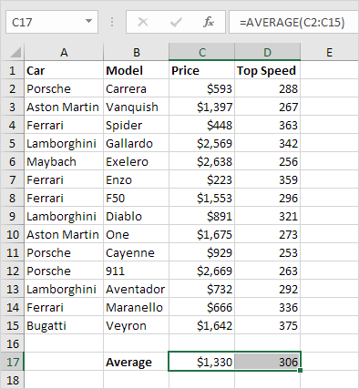
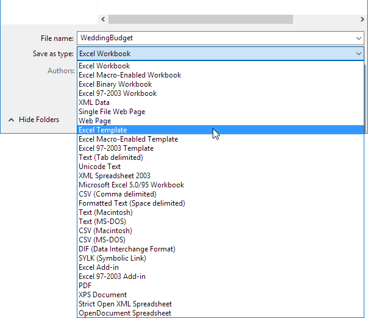
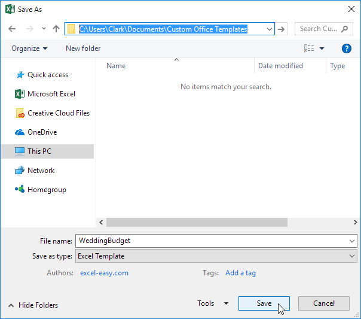
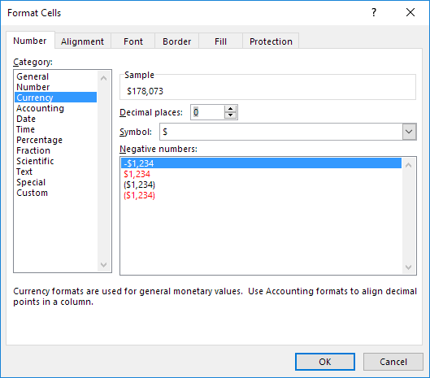
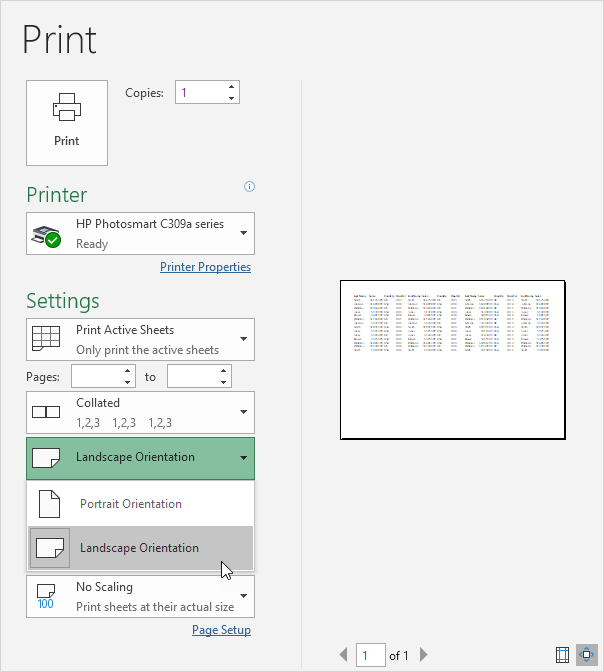
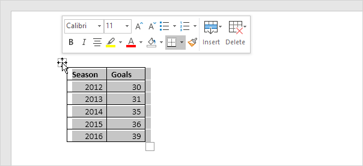
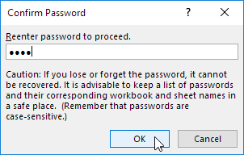

Dasar - dasar
Bagian ini menjelaskan dasar - dasar Excel.
Ribbon
Tab | Grup | Gunakan Ribbon | Tutup Ribbon
Excel memilih Beranda Tab Ribbon saat Anda membuka Excel. Pelajari cara menggunakan Ribbon.
Tab
Tab pada Ribbon adalah: File, Home, Insert, Page layout, Formulas, Data, Review, View dan Help. Tab Beranda berisi perintah yang paling sering digunakan di Excel.

Grup
Setiap tab berisi grup perintah terkait. Misalnya, tab Tata Letak Halaman berisi grup Tema, grup Penyetelan Halaman, dll.

Gunakan Ribbon
Mari kita gunakan Ribbon untuk menyisipkan tabel. Tabel memungkinkan Anda menganalisis data di Excel dengan cepat dan mudah.
- Klik salah satu sel di dalam kumpulan data.
-
Pada tab Sisipkan, dalam grup Tabel, klik Tabel.

-
Excel secara otomatis memilih data untuk Anda. Centang 'Tabel saya memiliki header' dan klik OK.

Hasil. Excel membuat tabel yang diformat dengan baik untuk Anda.

Catatan: gunakan panah tarik-turun untuk mengurutkan dan memfilter dengan cepat. Kunjungi bab kami tentang tabel untuk mempelajari lebih lanjut tentang topik ini.
Tutup Ribbon (Collapse the Ribbon)
Anda dapat menciutkan Ribbon untuk mendapatkan ruang ekstra di layar. Klik kanan di mana saja pada Ribbon, lalu klik Tutup Ribbon (atau tekan Ctrl+F1).
Hasil.

Buku Kerja (Workbook)
Buka Buku Kerja yang sudah Ada | Tutup Buku Kerja | Buat Buku Kerja Baru | Matikan layar Mulai
Buku kerja adalah kata lain untuk nama file Excel. Saat Anda memulai Excel, klik Buku kerja kosong untuk membuat buku kerja Excel dari awal.
Buka Buku Kerja yang sudah Ada
Untuk membuka buku kerja yang telah Anda buat sebelumnya, jalankan langkah-langkah berikut.
- Pada tab File, klik Buka.
-
Terbaru menampilkan daftar buku kerja yang baru saja Anda gunakan. Anda dapat dengan cepat membuka buku kerja dari sini.
- Klik Telusuri untuk membuka buku kerja yang tidak ada dalam daftar.
Tutup Buku Kerja
Untuk menutup buku kerja (dan Excel), klik kanan atas X. Jika Anda memiliki beberapa buku kerja yang terbuka, mengklik kanan atas X akan menutup buku kerja yang aktif.

Buat Buku Kerja Baru
Terkadang Anda ingin memulai dari awal lagi. Untuk membuat buku kerja baru, jalankan langkah-langkah berikut.
- Pada tab File, klik Baru.
-
Klik Buku kerja kosong.

Matikan layar Mulai
Saat Anda memulai Excel, ini menunjukkan layar mulai yang mencantumkan file dan templat Excel yang baru saja digunakan. Untuk melewati layar mulai dan selalu memulai dengan buku kerja kosong, jalankan langkah-langkah berikut.
- Pada tab File, klik Opsi.
-
Di bawah opsi Mulai, hapus centang 'Tampilkan layar Mulai saat aplikasi ini dimulai'.
- Klik Oke.
Lembar kerja
Pilih Lembar Kerja | Sisipkan Lembar Kerja | Ganti Nama Lembar Kerja | Pindahkan Lembar Kerja | Menghapus Lembar Kerja | Salin Lembar Kerja
Lembar kerja adalah kumpulan sel tempat Anda menyimpan dan memanipulasi data. Setiap buku kerja Excel dapat berisi beberapa lembar kerja.
Pilih Lembar Kerja
Ketika Anda membuka Excel workbook, Excel secara otomatis memilih Sheet1 untuk Anda. Nama lembar kerja muncul pada tab lembarnya di bagian bawah jendela dokumen.

Sisipkan Lembar Kerja
Anda dapat menyisipkan lembar kerja sebanyak yang Anda inginkan. Untuk menyisipkan lembar kerja baru dengan cepat, klik tanda plus di bagian bawah jendela dokumen.

Hasil:
Ganti nama Lembar Kerja
Untuk memberi lembar kerja nama yang lebih spesifik, jalankan langkah-langkah berikut.
- Klik kanan pada tab lembar Sheet1.
-
Pilih Ganti Nama.
-
Misalnya, ketik Penjualan 2016.
Pindahkan Lembar Kerja
Untuk memindahkan lembar kerja, klik pada tab lembar lembar kerja yang ingin Anda pindahkan dan seret ke posisi baru.
Misalnya, klik pada tab lembar Sheet2 dan seret sebelum Penjualan 2016.
Hasil:
Hapus Lembar Kerja
Untuk menghapus lembar kerja, klik kanan pada tab lembar dan pilih Hapus.
Misalnya, hapus Sheet2.
Hasil:
Salin Lembar Kerja
Bayangkan, Anda telah menyiapkan penjualan untuk tahun 2016 dan ingin membuat lembar yang sama persis untuk tahun 2017, tetapi dengan data yang berbeda. Anda dapat membuat ulang lembar kerja, tetapi ini memakan waktu. Jauh lebih mudah untuk menyalin seluruh lembar kerja dan hanya mengubah angkanya.
- Klik kanan pada tab lembar Sales 2016.
-
Pilih Pindahkan atau Salin.
Kotak dialog 'Pindahkan atau Salin' muncul.
-
Pilih (pindah ke akhir) dan centang Buat salinan.

-
Klik Oke.
Hasil:
Catatan: Anda bahkan dapat menyalin lembar kerja ke buku kerja Excel lain dengan memilih buku kerja tertentu dari daftar turun bawah (lihat kotak dialog yang diperlihatkan sebelumnya).
Format Sel
Saat kami memformat sel di Excel, kami mengubah tampilan angka tanpa mengubah angka itu sendiri. Kita dapat menerapkan format angka (0.8, $0.80, 80%, dll) atau format lain (perataan, font, batas, dll).
-
Masukkan nilai 0,8 ke dalam sel B2.

Secara default, Excel menggunakan format Umum (tidak ada format angka tertentu) untuk angka. Untuk menerapkan format angka, gunakan kotak dialog 'Format Sel'.
- Pilih sel B2.
-
Klik kanan, lalu klik Format Cells (atau tekan Ctrl+1).

Kotak dialog 'Format Sel' muncul.
-
Misalnya, pilih Mata Uang.

Catatan: Excel memberi Anda pratinjau langsung tentang bagaimana nomor akan diformat (di bawah Contoh).
-
Klik Oke.

Sel B2 masih berisi angka 0.8. Kami hanya mengubah tampilan nomor ini. Perintah pemformatan yang paling sering digunakan tersedia di tab Beranda.
-
Pada tab Beranda, di grup Angka, klik simbol persentase untuk menerapkan format Persentase.

-
Pada tab Home, di grup Alignment, pusatkan angka.

-
Pada tab Home, di grup Font, tambahkan batas luar dan ubah warna font menjadi biru.

Hasil:
Find & Select
Find | Replace | Go To Special
Anda dapat menggunakan fitur Temukan dan Ganti Excel untuk menemukan teks tertentu dengan cepat dan menggantinya dengan teks lain. Anda dapat menggunakan fitur Go To Special Excel untuk memilih semua sel dengan cepat dengan rumus, komentar, pemformatan bersyarat, konstanta, validasi data, dll.
Find
Untuk menemukan teks tertentu dengan cepat, jalankan langkah-langkah berikut.
-
Pada tab Beranda, dalam grup Pengeditan, klik Find & Select.

-
Klik Temukan.

Kotak dialog 'Find and Replace' muncul.
- Ketik teks yang ingin Anda temukan. Misalnya, ketik Ferrari.
-
Klik 'Find Next'.
Excel memilih kejadian pertama.

-
Klik 'Find Next' untuk memilih kemunculan kedua.
-
Untuk mendapatkan daftar semua kejadian, klik 'Find All'.

Replace
Untuk menemukan teks tertentu dengan cepat dan menggantinya dengan teks lain, jalankan langkah-langkah berikut.
-
Pada tab Beranda, dalam grup Pengeditan, klik Find & Select.
-
Klik Replace.

Kotak dialog 'Find and Replace' muncul (dengan tab Ganti dipilih).
- Ketik teks yang ingin Anda temukan (Veneno) dan ganti dengan (Diablo).
-
Klik 'Find Next'.
Excel memilih kejadian pertama. Belum ada penggantian yang dilakukan.
-
Klik 'Replace' untuk melakukan satu penggantian.

Catatan: gunakan 'Replace All' untuk mengganti semua kemunculan.
Go To Special
Anda dapat menggunakan fitur Go To Special Excel untuk dengan cepat memilih semua sel dengan rumus, komentar, pemformatan bersyarat, konstanta, validasi data, dll. Misalnya, untuk memilih semua sel dengan rumus, jalankan langkah-langkah berikut.
- Pilih satu sel.
-
Pada tab Beranda, dalam grup Pengeditan, klik Find & Select.
-
Klik Go To Special.

Catatan: Rumus, Komentar, Pemformatan Bersyarat, Konstanta, dan Validasi Data adalah shortcuts. Mereka juga dapat ditemukan di bawah Go To Special.
-
Pilih Formulas dan klik OK.

Catatan: Anda dapat mencari sel dengan rumus yang mengembalikan Angka, Teks, Logika (BENAR dan SALAH) dan Kesalahan. Kotak centang ini juga tersedia jika Anda memilih Konstanta.
Excel memilih semua sel dengan rumus.

Catatan umum: jika Anda memilih satu sel sebelum mengklik Find, Replace atau Go To Special, Excel akan mencari seluruh lembar kerja. Untuk mencari rentang sel, pertama-tama pilih rentang sel.
Template
Template yang Ada | Buat Template
Daripada membuat buku kerja Excel dari awal, Anda bisa membuat buku kerja berdasarkan template. Ada banyak template gratis yang tersedia, menunggu untuk digunakan.
Template yang ada
Untuk membuat buku kerja berdasarkan template yang sudah ada, jalankan langkah-langkah berikut.
- Pada tab File, klik Baru.
-
Gunakan kotak pencarian untuk mencari templat online atau klik templat dari salah satu templat Office.

-
Klik Buat untuk mengunduh template.

Excel membuat buku kerja Home inventory1.xlsx berdasarkan template ini.
Buat Template
Jika Anda membuat template sendiri, Anda dapat menyimpannya dengan aman di folder Templates. Hasilnya, Anda dapat membuat buku kerja baru berdasarkan template ini tanpa khawatir Anda menimpa file asli.
Untuk membuat template, lakukan langkah-langkah berikut.
- Buat buku kerja.
- Pada tab File, klik Simpan Sebagai.
-
Klik Telusuri.

- Masukkan nama file.
-
Pilih Template Excel (*.xltx) dari daftar drop-down.

Excel secara otomatis mengaktifkan folder Template. Perhatikan lokasi folder Templates di komputer Anda. Biasanya terletak di sini:
C:\Users\<username>\Documents\Custom Office Templates
-
Klik Simpan.

Untuk membuat buku kerja berdasarkan templat ini, jalankan langkah-langkah berikut.
- Pada tab File, klik Baru.
- Klik Pribadi.
-
Klik WeddingBudget.

Excel membuat buku kerja WeddingBudget1.xlsx berdasarkan template ini.
Catatan: untuk mengedit template, pada tab File, klik Buka, lalu klik Telusuri, untuk membuka template. Edit file dan simpan file ke lokasi aslinya.
Validasi data
Contoh Validasi Data | Buat Aturan Validasi Data | Masukkan Pesan | Peringatan Kesalahan | Hasil Validasi Data
Gunakan validasi data di Excel untuk memastikan bahwa pengguna memasukkan nilai tertentu ke dalam sel.
Contoh Validasi Data
Dalam contoh ini, kami membatasi pengguna untuk memasukkan bilangan bulat antara 0 dan 10.

Buat Aturan Validasi Data
Untuk membuat aturan validasi data, jalankan langkah-langkah berikut.
- Pilih sel C2.
-
Pada tab Data, dalam grup Alat Data, klik Validasi Data.

Pada tab Pengaturan:
- Dalam daftar Izinkan, klik Bilangan bulat.
- Dalam daftar Data, klik di antara.
-
Masukkan nilai Minimum dan Maksimum.

Pesan Masukan
Pesan input muncul ketika pengguna memilih sel dan memberi tahu pengguna apa yang harus dimasukkan.
Pada tab Pesan Masukan:
- Centang 'Tampilkan pesan masukan saat sel dipilih'.
- Masukkan judul.
-
Masukkan pesan masukan.

Peringatan Kesalahan
Jika pengguna mengabaikan pesan input dan memasukkan nomor yang tidak valid, Anda dapat menunjukkan peringatan kesalahan kepada mereka.
Pada tab Peringatan Kesalahan:
- Centang 'Tampilkan peringatan kesalahan setelah data yang dimasukkan tidak valid'.
- Masukkan judul.
-
Masukkan pesan kesalahan.

- Klik Oke.
Hasil Validasi Data
-
Pilih sel C2.

-
Coba masukkan angka yang lebih tinggi dari 10.
Hasil:

Catatan: untuk menghapus validasi data dari sel, pilih sel, pada tab Data, dalam grup Alat Data, klik Validasi Data, lalu klik Hapus Semua. Anda dapat menggunakan fitur Go To Special Excel untuk memilih semua sel dengan cepat dengan validasi data.
Pintasan Keyboard
Dasar | Moving | Selecting | Rumus | Memformat
Pintasan keyboard memungkinkan Anda melakukan berbagai hal dengan keyboard alih-alih mouse untuk meningkatkan kecepatan.
Dasar
Pilih sel B2.

-
Untuk memilih seluruh rentang, tekan Ctrl+A (jika Anda menekan Ctrl+ sekali lagi Excel memilih seluruh lembar).
- Untuk menyalin rentang, tekan Ctrl+C (untuk memotong rentang, tekan Ctrl+X).
-
Pilih sel A6 dan tekan Ctrl+V untuk menempelkan rentang ini.

- Untuk membatalkan operasi ini, tekan Ctrl+Z
Moving
Pilih sel B2.
-
Untuk berpindah ke bagian bawah rentang dengan cepat, tahan Ctrl dan tekan

-
Untuk bergerak cepat ke kanan rentang, tahan Ctrl dan tekan

Cobalah sendiri. Tahan Ctrl dan tekan tombol panah untuk berpindah dari ujung ke ujung.
Selecting
Pilih sel A1.
-
Untuk memilih sel saat bergerak ke bawah, tahan Shift dan tekan beberapa kali.

-
Untuk memilih sel sambil bergerak ke kanan, tahan Shift dan tekan beberapa kali.

Rumus
Pilih sel F2.
-
Untuk memasukkan fungsi SUM dengan cepat, tekan Alt + =, dan tekan Enter.
-
Pilih sel F2, tahan Shift dan tekan dua kali.
-
Untuk mengisi rumus ke bawah, tekan Ctrl+D (bawah).
Catatan: dengan cara yang sama, Anda dapat mengisi rumus dengan benar dengan menekan Ctrl+R (kanan).
Memformat
Pilih rentang B2:F4.

- Untuk meluncurkan kotak dialog 'Format Cells', tekan Ctrl+1
- Tekan TAB dan tekan dua kali untuk memilih format Mata Uang.
-
Tekan TAB dan tekan dua kali untuk mengatur jumlah tempat desimal ke 0.

-
Tekan Enter.
Hasil:

- Untuk menebalkan rentang dengan cepat, pilih rentang dan tekan Ctrl+B
Print Lembar Kerja | Apa yang Harus Dicetak | Beberapa Salinan | Orientasi | Margin Halaman | Penskalaan
Bab ini mengajarkan Anda cara Print lembar kerja dan cara mengubah beberapa pengaturan Print penting di Excel.
Print Lembar Kerja
Untuk Print lembar kerja di Excel, jalankan langkah-langkah berikut.
- Pada tab File, klik Print.
-
Untuk melihat pratinjau halaman lain yang akan dicetak, klik 'Next Page' atau 'Previous Page' di bagian bawah jendela.

-
Untuk Print lembar kerja, klik tombol Print.

Apa yang Harus Dicetak?
Alih-alih Print seluruh lembar kerja, Anda juga dapat Print pilihan saat ini.
- Pertama, pilih rentang sel yang ingin Anda Print.
-
Selanjutnya, di bawah Pengaturan, pilih Pilihan Print.
-
Untuk Print pilihan, klik tombol Print.
Catatan: Anda juga dapat Print lembar aktif (pertama pilih lembar dengan menahan Ctrl dan mengklik tab lembar) atau Print seluruh buku kerja. Gunakan kotak di sebelah Pages (lihat tangkapan layar pertama) untuk hanya Print beberapa halaman dokumen Anda. Misalnya, 2 hingga 2 hanya Print halaman kedua.
Beberapa Salinan
Untuk Print banyak salinan, lakukan langkah-langkah berikut.
- Gunakan panah di sebelah kotak Salinan.
-
Jika satu salinan berisi beberapa halaman, Anda dapat beralih antara Disusun dan Tidak Disusun. Misalnya, jika Anda Print 6 eksemplar, Collated Print seluruh salinan pertama, kemudian seluruh salinan kedua, dll. Uncollated Print 6 salinan halaman 1, 6 salinan halaman 2, dll.

Orientasi
Anda dapat beralih antara Orientasi Portrait (lebih banyak baris tetapi lebih sedikit kolom) dan Orientasi Landscape (lebih banyak kolom tetapi lebih sedikit baris).

Margin Halaman
Untuk menyesuaikan margin halaman, jalankan langkah-langkah berikut.
- Pilih salah satu margin yang telah ditentukan sebelumnya (Normal, Wide atau Narrow) dari daftar drop-down Margins.
-
Atau klik ikon 'Show Margins' di kanan bawah jendela. Sekarang Anda dapat menyeret garis untuk mengubah margin halaman secara manual.
Penskalaan
Jika Anda ingin memasukkan lebih banyak data pada satu halaman, Anda dapat memasukkan lembar tersebut pada satu halaman. Untuk mencapai ini, jalankan langkah-langkah berikut.
Pilih 'Fit Sheet on One Page' dari daftar drop-down Scaling.

Catatan: Anda juga dapat mengecilkan hasil Print menjadi satu halaman lebar atau satu halaman tinggi. Klik Opsi Penskalaan Kustom untuk memasukkan persentase penskalaan secara manual atau untuk menyesuaikan hasil Print dengan jumlah halaman tertentu yang lebar dan tinggi. Hati-hati, Excel tidak memperingatkan Anda saat hasil Print Anda menjadi tidak terbaca.
Share (Berbagi File)
Pelajari cara berbagi data Excel dengan dokumen Word dan file lainnya.
Paste
Sebagian besar waktu, Anda hanya perlu menempelkan data Excel statis dalam dokumen Word.
-
Pilih data Excel.

- Klik kanan, lalu klik Salin (atau tekan Ctrl+C).
- Buka dokumen Word.
- Tekan Ctrl+V.
-
Klik ikon di sudut kiri atas tabel dan tambahkan batas.
Hasil.

Catatan: Untuk menghapus tabel, klik kanan ikon di sudut kiri atas, lalu klik Hapus Tabel.
Paste Link
Anda juga dapat menautkan data sumber di Excel dengan data tujuan di Word. Jika Anda mengubah data di Excel, data di Word diperbarui secara otomatis.
- Ulangi langkah 1 sampai 3 di atas.
-
Di Word, pada tab Beranda, di grup Clipboard, klik Tempel.

-
Klik Tempel Spesial.

Kotak dialog Tempel Spesial muncul.
- Klik tautan Tempel, Format HTML.
-
Klik Oke.

-
Klik ikon di sudut kiri atas tabel dan tambahkan batas.
Hasil.

-
Ubah data Excel.

Hasil.

Catatan: Di Word, klik kanan ikon di sudut kiri atas tabel, lalu klik Objek Lembar Kerja Tertaut, Tautan untuk meluncurkan kotak dialog Tautan. Di sini, Anda dapat memutuskan tautan, mengubah lokasi file Excel, dll.
Protect
Enkripsi file Excel dengan kata sandi sehingga memerlukan kata sandi untuk membukanya. Untuk melindungi file Excel dengan kata sandi, jalankan langkah-langkah berikut.
- Buka file Excel.
- Pada tab File, klik Simpan Sebagai.
-
Klik Telusuri.

-
Klik tombol Alat dan klik Opsi Umum.

-
Pada kotak Password to open, masukkan kata sandi dan klik OK.

-
Masukkan kembali kata sandi dan klik OK.

Catatan: fitur ini juga mengenkripsi file Excel Anda. Jika Anda kehilangan atau lupa kata sandi, itu tidak dapat dipulihkan.
-
Masukkan nama file dan klik Simpan.

Diperlukan kata sandi untuk membuka file Excel ini sekarang. Kata sandi untuk file Excel yang dapat diunduh adalah "mudah".